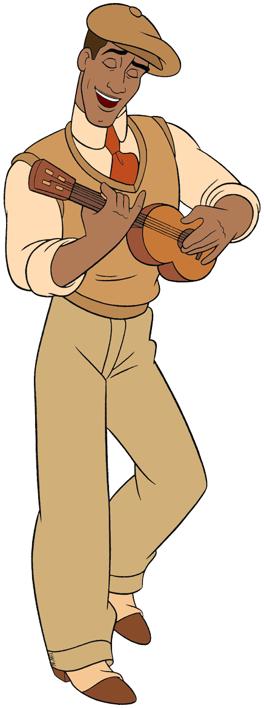
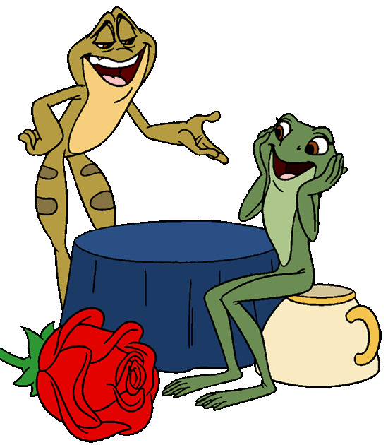

PEQUENOS PLANOS, BOAS COMPANHIAS
Qual vai ser o nosso
próximo momento?
Gire, descubra uma ideia e guarde um tempo para nós dois.


PEQUENOS PLANOS, BOAS COMPANHIAS
Gire, descubra uma ideia e guarde um tempo para nós dois.

